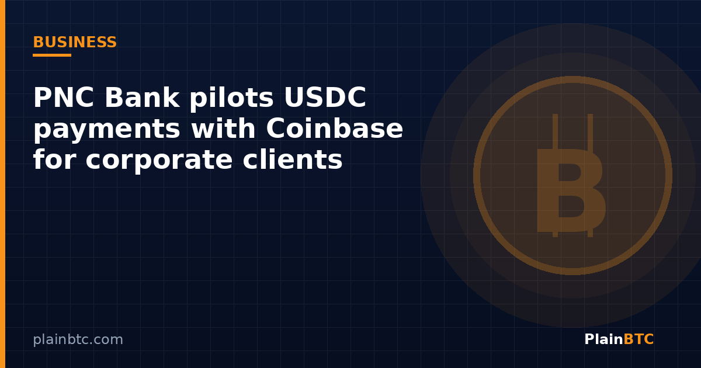

PNC Bank pilots USDC payments with Coinbase for corporate clients

PNC Bank said Monday it is making incoming USDC payments available to eligible Corporate & Institutional Banking clients, expanding its relationship with Coinbase. In a Nov. 9 press release, the Pittsburgh-based bank said clients can receive the dollar-backed stablecoin on the Ethereum blockchain through Coinbase Payment products, after which funds are automatically converted 1-to-1 into U.S. dollars and deposited into a designated PNC account.
The launch is a limited pilot, not a mass-market retail product. Still, it is one of the clearest signals yet that a major U.S. regional bank wants stablecoin rails inside ordinary treasury workflows—while keeping the final balance in familiar bank deposits rather than leaving corporates holding tokens on their own books.

Key takeaways
- PNC is piloting incoming USDC payments for eligible corporate and institutional clients.
- USDC arrives on Ethereum via Coinbase Payments, then converts 1:1 into USD in a PNC deposit account.
- The bank frames the product as a complement to existing faster-payment options, not a replacement.
- The partnership builds on a July 2025 Crypto-as-a-Service deal and earlier bitcoin trading for some private-banking clients.
How the pilot works
According to PNC, the corporate client receives a USDC payment; Coinbase’s payment infrastructure handles the stablecoin leg; PNC converts the tokens to dollars at parity and credits a designated deposit account. The bank said the design aims at faster access to funds and more efficient cross-border settlement, while clients keep access to PNC’s broader banking and treasury-management services.
Tom Lang, head of Treasury Management Product and Operations at PNC, said clients are “continually looking at new ways to interact and transact with customers, suppliers and business partners,” and described the pilot as a chance to support those needs with PNC’s risk-management and banking experience. Alec Lovett, head of Infrastructure Products at Coinbase, said the work shows how banks and digital-asset infrastructure can let corporate clients use stablecoin technology.

Why banks care about USDC settlement now
Dollar stablecoins have become a practical settlement asset for crypto markets and, increasingly, for experiments in business-to-business payments. PNC’s pilot does not require a corporate treasurer to become a crypto trader. The client’s end state is still a dollar deposit. That packaging matters for compliance teams that are willing to test blockchain payment speed but want the accounting outcome to look like a conventional wire or ACH credit.
The Block noted that PNC first announced a Coinbase partnership in July 2025, agreeing to use Coinbase’s Crypto-as-a-Service platform while providing select banking services to Coinbase. In December 2025, PNC began offering spot bitcoin trading to eligible private-banking clients through existing investment accounts. Monday’s USDC pilot is therefore a payments-side expansion of an already multi-product relationship, not a first contact between the two firms.
For individual investors watching from the sidelines, the news is less about a new consumer app and more about infrastructure: when large banks route stablecoin receipts into insured deposit accounts, it reduces friction between on-chain dollars and the traditional banking system. Retail users who simply want to buy or hold crypto still typically start on an exchange; Coinbase remains one regulated U.S. venue for that separate use case.
Limits and open questions
PNC emphasized that the service starts on a limited basis for eligible clients. Neither PNC nor Coinbase published a nationwide retail timeline in Monday’s materials. Reuters coverage likewise framed the move as continued testing of dollar-backed tokens by financial firms rather than a finished industry standard. Questions that remain for corporate adopters include onboarding criteria, supported corridors, fees relative to wires, reconciliation tooling, and how sanctions and travel-rule screening attach to the stablecoin leg before the dollar credit posts.
Policy context also matters. U.S. stablecoin legislation under the GENIUS Act is pushing issuers and banks toward clearer supervisory expectations. Monday’s FinCEN/Fed withdrawal of an unrelated 2020 Travel Rule threshold proposal does not rewrite stablecoin rules, but it underscores that AML frameworks around digital dollars are still being reshaped piece by piece.
What to watch next
- Whether PNC expands the pilot beyond the initial eligible corporate cohort.
- Fee schedules and settlement-time comparisons versus wires and other faster-payment rails.
- Similar USDC or stablecoin receipt products from other U.S. banks using Coinbase or rival infrastructure.
- How GENIUS Act implementation rules interact with bank-hosted stablecoin payment flows.
New to crypto? Our beginner guide to buying bitcoin on Coinbase.
Want a regulated U.S. crypto account?
If you are exploring bitcoin or stablecoins as an individual—not a corporate treasury—you can open a Coinbase account with our referral link. Eligible new users may receive a bonus after a qualifying trade; terms vary by country and can change.
Sign up on Coinbase with this linkNot financial advice. This article is for informational and educational purposes only. It is not investment, trading, legal, or tax advice. Cryptocurrency is volatile and you can lose money. Do your own research and consider speaking with a qualified professional before making financial decisions.